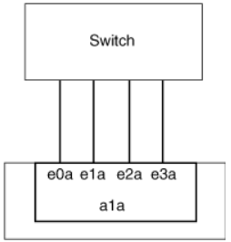

Combine physical ports to create interface groups
Contributors
 Download PDF of this page
Download PDF of this page
An interface group is created by combining two or more physical ports into a single logical port. The logical port provides increased resiliency, increased availability, and load sharing.
Interface group types
Three types of interface groups are supported on the storage system: single-mode, static multimode, and dynamic multimode. Each interface group provides different levels of fault tolerance. Multimode interface groups provide methods for load balancing network traffic.
Characteristics of single-mode interface groups
In a single-mode interface group, only one of the interfaces in the interface group is active. The other interfaces are on standby, ready to take over if the active interface fails.
Characteristics of a single-mode interface groups:
-
For failover, the cluster monitors the active link and controls failover.
Because the cluster monitors the active link, there is no switch configuration required.
-
There can be more than one interface on standby in a single-mode interface group.
-
If a single-mode interface group spans multiple switches, you must connect the switches with an Inter-Switch link (ISL).
-
For a single-mode interface group, the switch ports must be in the same broadcast domain.
-
Link-monitoring ARP packets, which have a source address of 0.0.0.0, are sent over the ports to verify that the ports are in the same broadcast domain.The following figure is an example of a single-mode interface group. In the figure, e0a and e1a are part of the a0a single-mode interface group. If the active interface, e0a, fails, the standby e1a interface takes over and maintains the connection to the switch.

| To accomplish single-mode functionality, the recommended approach is to instead use failover groups. By using a failover group, the second port can still be used for other LIFs and need not remain unused. Additionally, failover groups can span more than two ports and can span ports on multiple nodes. |
Characteristics of static multimode interface groups
The static multimode interface group implementation in ONTAP complies with IEEE 802.3ad (static). Any switch that supports aggregates, but does not have control packet exchange for configuring an aggregate, can be used with static multimode interface groups.
Static multimode interface groups do not comply with IEEE 802.3ad (dynamic), also known as Link Aggregation Control Protocol (LACP). LACP is equivalent to Port Aggregation Protocol (PAgP), the proprietary link aggregation protocol from Cisco.
The following are characteristics of a static multimode interface group:
-
All interfaces in the interface group are active and share a single MAC address.
-
Multiple individual connections are distributed among the interfaces in the interface group.
-
Each connection or session uses one interface within the interface group.
When you use the sequential load balancing scheme, all sessions are distributed across available links on a packet-by-packet basis, and are not bound to a particular interface from the interface group.
-
-
Static multimode interface groups can recover from a failure of up to "n-1" interfaces, where n is the total number of interfaces that form the interface group.
-
If a port fails or is unplugged, the traffic that was traversing the failed link is automatically redistributed to one of the remaining interfaces.
-
Static multimode interface groups can detect a loss of link, but they cannot detect a loss of connectivity to the client or switch misconfigurations that might impact connectivity and performance.
-
A static multimode interface group requires a switch that supports link aggregation over multiple switch ports.
The switch is configured so that all ports to which links of an interface group are connected are part of a single logical port. Some switches might not support link aggregation of ports configured for jumbo frames. For more information, see your switch vendor’s documentation.
-
Several load balancing options are available to distribute traffic among the interfaces of a static multimode interface group.
The following figure is an example of a static multimode interface group. Interfaces e0a, e1a, e2a, and e3a are part of the a1a multimode interface group. All four interfaces in the a1a multimode interface group are active.

Several technologies exist that enable traffic in a single aggregated link to be distributed across multiple physical switches. The technologies used to enable this capability vary among networking products. Static multimode interface groups in ONTAP conform to the IEEE 802.3 standards. If a particular multiple switch link aggregation technology is said to interoperate with or conform to the IEEE 802.3 standards, it should operate with ONTAP.
The IEEE 802.3 standard states that the transmitting device in an aggregated link determines the physical interface for transmission. Therefore, ONTAP is only responsible for distributing outbound traffic, and cannot control how inbound frames arrive. If you want to manage or control the transmission of inbound traffic on an aggregated link, that transmission must be modified on the directly connected network device.
Dynamic multimode interface group
Dynamic multimode interface groups implement Link Aggregation Control Protocol (LACP) to communicate group membership to the directly attached switch. LACP enables you to detect the loss of link status and the inability of the node to communicate with the direct-attached switch port.
Dynamic multimode interface group implementation in ONTAP complies with IEEE 802.3 AD (802.1 AX). ONTAP does not support Port Aggregation Protocol (PAgP), which is a proprietary link aggregation protocol from Cisco.
A dynamic multimode interface group requires a switch that supports LACP.
ONTAP implements LACP in nonconfigurable active mode that works well with switches that are configured in either active or passive mode. ONTAP implements the long and short LACP timers (for use with nonconfigurable values 3 seconds and 90 seconds), as specified in IEEE 802.3 AD (802.1AX).
The ONTAP load balancing algorithm determines the member port to be used to transmit outbound traffic, and does not control how inbound frames are received. The switch determines the member (individual physical port) of its port channel group to be used for transmission, based on the load balancing algorithm configured in the switch’s port channel group. Therefore, the switch configuration determines the member port (individual physical port) of the storage system to receive traffic. For more information about configuring the switch, see the documentation from your switch vendor.
If an individual interface fails to receive successive LACP protocol packets, then that individual interface is marked as "lag_inactive" in the output of "ifgrp status" command. Existing traffic is automatically rerouted to any remaining active interfaces.
The following rules apply when using dynamic multimode interface groups:
-
Dynamic multimode interface groups should be configured to use the port-based, IP-based, MAC-based, or round robin load balancing methods.
-
In a dynamic multimode interface group, all interfaces must be active and share a single MAC address.
The following figure is an example of a dynamic multimode interface group. Interfaces e0a, e1a, e2a, and e3a are part of the a1a multimode interface group. All four interfaces in the a1a dynamic multimode interface group are active.
Load balancing in multimode interface groups
You can ensure that all interfaces of a multimode interface group are equally utilized for outgoing traffic by using the IP address, MAC address, sequential, or port-based load balancing methods to distribute network traffic equally over the network ports of a multimode interface group.
The load balancing method for a multimode interface group can be specified only when the interface group is created.
Best Practice: Port-based load balancing is recommended whenever possible. Use port-based load balancing unless there is a specific reason or limitation in the network that prevents it.
Port-based load balancing
Port-based load balancing is the recommended method.
You can equalize traffic on a multimode interface group based on the transport layer (TCP/UDP) ports by using the port-based load balancing method.
The port-based load balancing method uses a fast hashing algorithm on the source and destination IP addresses along with the transport layer port number.
IP address and MAC address load balancing
IP address and MAC address load balancing are the methods for equalizing traffic on multimode interface groups.
These load balancing methods use a fast hashing algorithm on the source and destination addresses (IP address and MAC address). If the result of the hashing algorithm maps to an interface that is not in the UP link-state, the next active interface is used.
| Do not select the MAC address load balancing method when creating interface groups on a system that connects directly to a router. In such a setup, for every outgoing IP frame, the destination MAC address is the MAC address of the router. As a result, only one interface of the interface group is used. |
IP address load balancing works in the same way for both IPv4 and IPv6 addresses.
Sequential load balancing
You can use sequential load balancing to equally distribute packets among multiple links using a round robin algorithm. You can use the sequential option for load balancing a single connection’s traffic across multiple links to increase single connection throughput.
However, because sequential load balancing may cause out-of-order packet delivery, extremely poor performance can result. Therefore, sequential load balancing is generally not recommended.
Create an interface group
You can create an interface groupsingle-mode, static multimode, or dynamic multimode (LACP)to present a single interface to clients by combining the capabilities of the aggregated network ports.
About this task
-
For a complete list of configuration restrictions that apply to port interface groups, see the
network port ifgrp add-portman page. -
When creating a multimode interface group, you can specify any of the following load-balancing methods:
-
port: Network traffic is distributed on the basis of the transport layer (TCP/UDP) ports. This is the recommended load-balancing method.
-
mac: Network traffic is distributed on the basis of MAC addresses.
-
ip: Network traffic is distributed on the basis of IP addresses.
-
sequential: Network traffic is distributed as it is received.
-
| The MAC address of an interface group is determined by the order of the underlying ports and how these ports initialize during bootup. You should therefore not assume that the ifgrp MAC address is persistent across reboots or ONTAP upgrades. |
Step
Use the network port ifgrp create command to create an interface group.
Interface groups must be named using the syntax a<number><letter>. For example, a0a, a0b, a1c, and a2a are valid interface group names.
For more information about this command, see the man pages.
The following example shows how to create an interface group named a0a with a distribution function of port and a mode of multimode:
network port ifgrp create -node cluster-1-01 -ifgrp a0a -distr-func port -mode multimode
Add a port to an interface group
You can add up to 16 physical ports to an interface group for all port speeds.
Step
Add network ports to the interface group:
network port ifgrp add-port
For more information about this command, see ONTAP 9 commands.
The following example shows how to add port e0c to an interface group named a0a:
network port ifgrp add-port -node cluster-1-01 -ifgrp a0a -port e0c
Interface groups are automatically placed into an appropriate broadcast domain about one minute after the first physical port is added to the interface group.
Remove a port from an interface group
You can remove a port from an interface group that hosts LIFs, as long as it is not the last port in the interface group. There is no requirement that the interface group must not host LIFs or that the interface group must not be the home port of a LIF considering that you are not removing the last port from the interface group. However, if you are removing the last port, then you must migrate or move the LIFs from the interface group first.
About this task
You can remove up to 16 ports (physical interfaces) from an interface group.
Step
Remove network ports from an interface group:
network port ifgrp remove-port
The following example shows how to remove port e0c from an interface group named a0a:
network port ifgrp remove-port -node cluster-1-01 -ifgrp a0a -port e0c
Delete an interface group
You can delete interface groups if you want to configure LIFs directly on the underlying physical ports or decide to change the interface group mode or distribution function.
Before you begin
-
The interface group must not be hosting a LIF.
-
The interface group must be neither the home port nor the failover target of a LIF.
Step
Use the network port ifgrp delete command to delete an interface group. For more information about this command, see ONTAP 9 commands.
The following example shows how to delete an interface group named a0b:
network port ifgrp delete -node cluster-1-01 -ifgrp a0b
 Edit on GitHub
Edit on GitHub